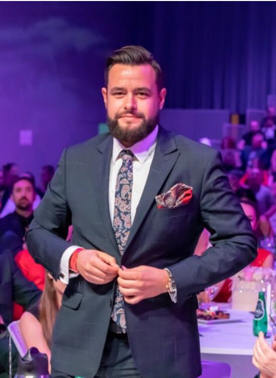
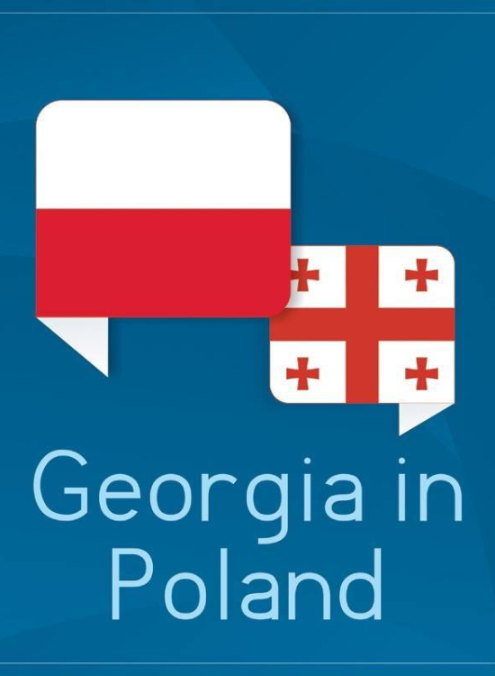
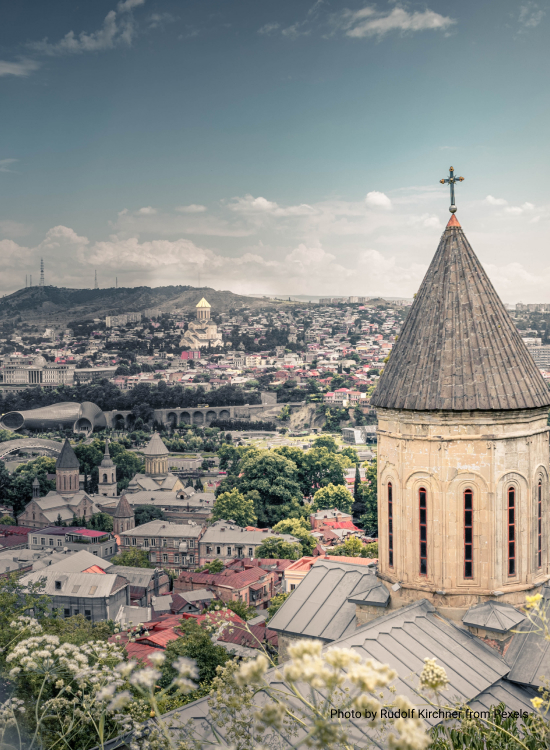

Informacje

Konsul Honorowy Gruzji w Polsce
Wojciech Wróbel

Misją Konsulatu Honorowego Gruzji we Wrocławiu

Krótka Historia Gruzji
Autor artykułu Ekaterina Mantidze

Dowiedz się więcej o Gruzji
Blogi, artykuly i ksiażki